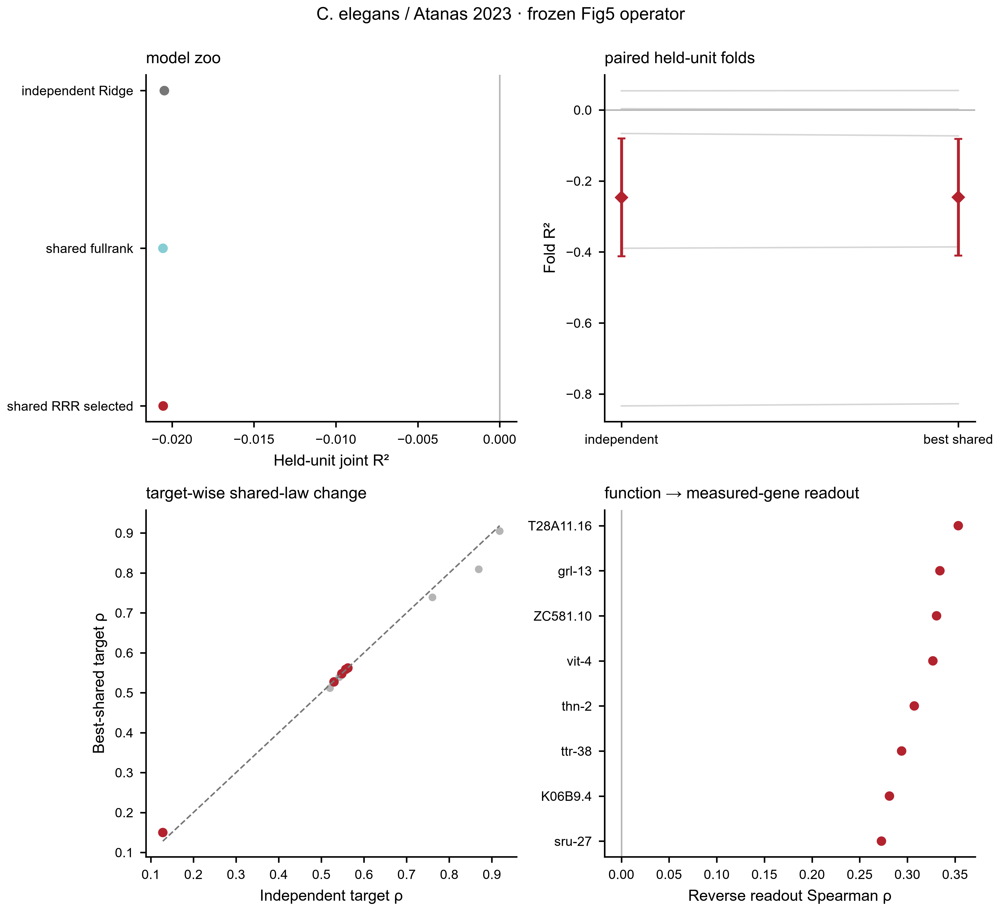
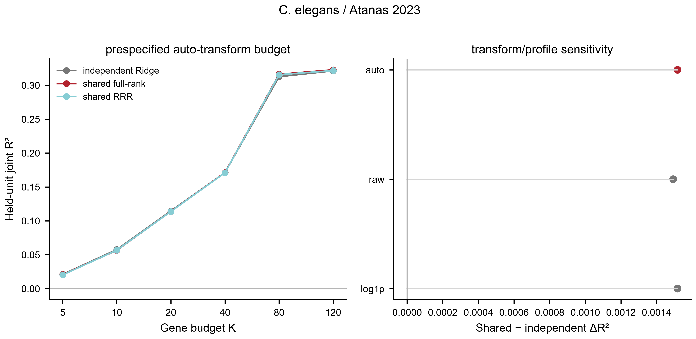

This page exposes what can actually be run and defended: stage coverage, key metrics, held-unit/null contract, explicit stop rules and downloadable authority rows.
4/7 stages standardized or explicitly gated.
20 key metrics extracted into this page.
5 authority subsets downloadable.
Evidence role: EXPLORATORY_FULL_SCAN; FDR_SUPPORTED; MULTIDATASET_SAME_SAMPLE_AIC; NOT_FDR_SUPPORTED
Current authority: n_held_units=40.0, 7.0
Boundary/stop rule: —
Evidence role: —
Current authority: —
Boundary/stop rule: —
Evidence role: DIRECTIONAL_OR_BOUNDARY
Current authority: inference_unit=5 held biological units
Boundary/stop rule: —
Evidence role: DIRECTIONAL_OR_LEGACY_FROZEN; POSITIVE; STRONG; SUPPORTED; TARGET_LEVEL
Current authority: inference_unit=held biological unit, 40 held biological units, 40 held groups, leave-one-function-out
Boundary/stop rule: —
Evidence role: BASELINE; BOUNDARY_OR_MIXED; EQUAL_PERFORMANCE_BOUNDARY
Current authority: 40 metric rows
Boundary/stop rule: domain=function; positive_delta_metrics=0.0/5.0 | domain=function; positive_delta_metrics=5.0/5.0
Evidence role: —
Current authority: —
Boundary/stop rule: —
Evidence role: —
Current authority: —
Boundary/stop rule: —

Frozen model contract: independent Ridge versus shared full-rank and response-space RRR under grouped biological-unit outer CV. Panel B keeps folds paired without duplicating individual points; panel C exposes target-wise heterogeneity; panel D tests reverse function→measured-gene readability.
model summary ·
fold metrics ·
target metrics ·
reverse-gene summary ·
editable SVG

Inference: grouped held-biological-unit outer CV. The auto_K1800 full measured-gene contract is primary. Budget, raw/log1p and biological-profile sweeps are sensitivity analyses and are not promoted over the frozen primary contract by choosing the best-looking value.
Exploratory sensitivity maximum: auto_K120 / shared_fullrank, R²=0.3227, ΔR²=0.0015.
all sweep rows ·
primary fold metrics ·
editable SVG ·
PDF
Final acceptance for a stage is stricter than showing a result: input contract → QC → held-unit split → comparator/null → full metrics → biological-unit consistency → figure/source-data → stop decision.